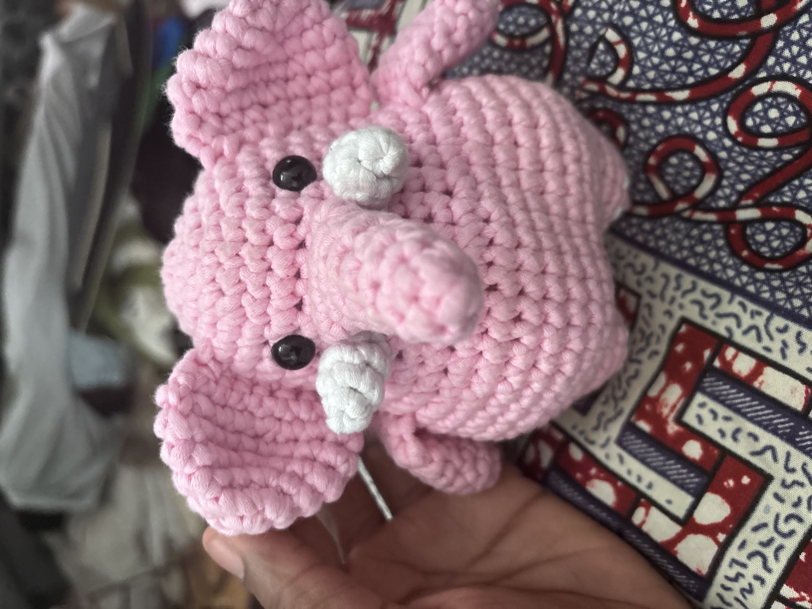
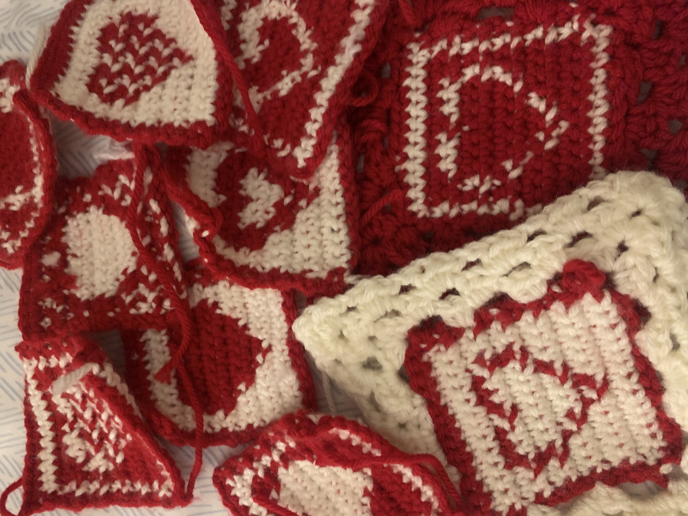
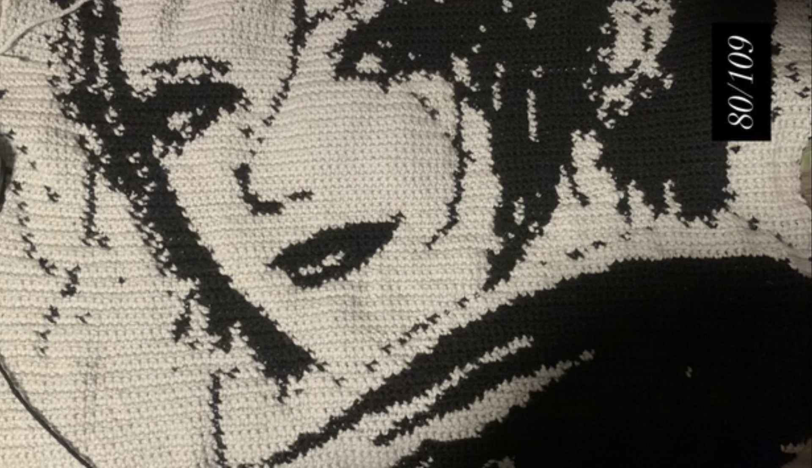
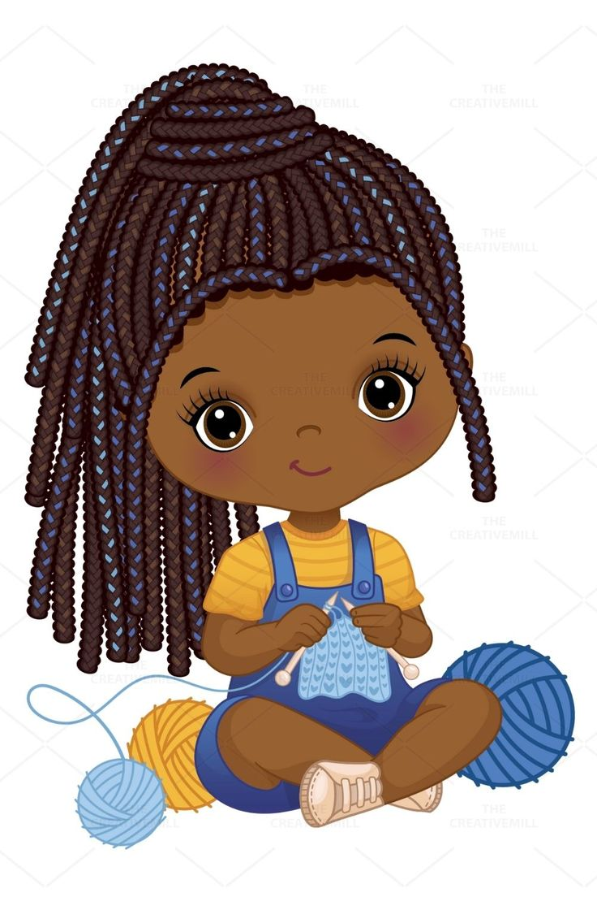

Crochet
I love to crochet. It's one of my favorite hobbies after drawing. I learned how to crochet in my freshman year of highschool from a YouTube video. Crocheting is a great way to decompress and relax after a long day. I get to make a lot of cool stuff. My favorite form of crochet is tapestry corchet, where you crochet images. I typically crochet these tapestries for my room decor. Below are some of my projects!
My Favorite Crochet Projects





Why Crochet?
Crochet is a wonderful hobby that allows me to express my creativity while also providing a relaxing escape from the stresses of daily life. The process of creating something beautiful with my own hands is incredibly satisfying. Here are some other benefits of crocheting:
- It's a great way to unwind and reduce stress.
- It improves fine motor skills and hand-eye coordination.
- It's a great way to create unique, personalized items.
- It can be a social activity, connecting you with other crafters.
Mystery Crochet Pattern
Here is a mystery crochet pattern! Do you think you can guess what it is befor you finish the pattern?
Materials:
- Weight 4/5 yarn, green and any additional color
- Crochet hook suitable for your yarn
- Scissors
- Tapestry needle
- Stick or wire
Stitches to know:
- Chain (ch)
- Single Crochet (sc)
- Double Crochet (dc)
- Slip Stitch (sl st)
- Skip (sk)
- 5 Double Crochet Shell (shell stitch)
Pattern:
- Row 1: Create a slip knot and ch 40
- Row 2: turn, sk3 then repeat these steps till the second to last stitch -> dc, ch 1, sk 1 ch, dc, ch 1
- When you reach the second to last stitch in Row 2 dc then ch1
- Row 3: turn, then in every gap in the chain from the double crochets in the previous row -> slst, shell stitch, slst
- Now roll up the chain with shell side up and then sew the back with the taspetry needle
- Now you can add a stick or wire to the bottom of the roll
Viola! You are done! Hopefully you like the creation! Thank you to Instructables for the pattern!
